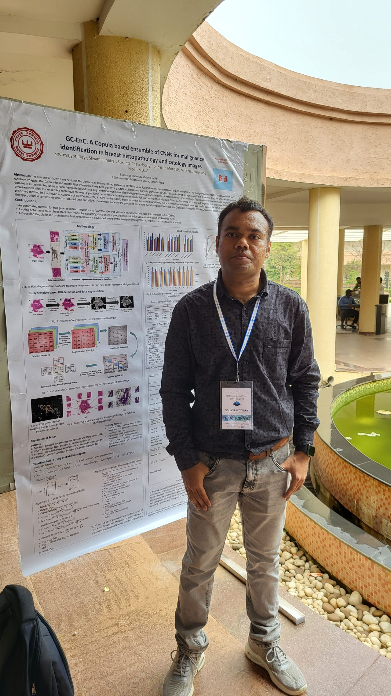
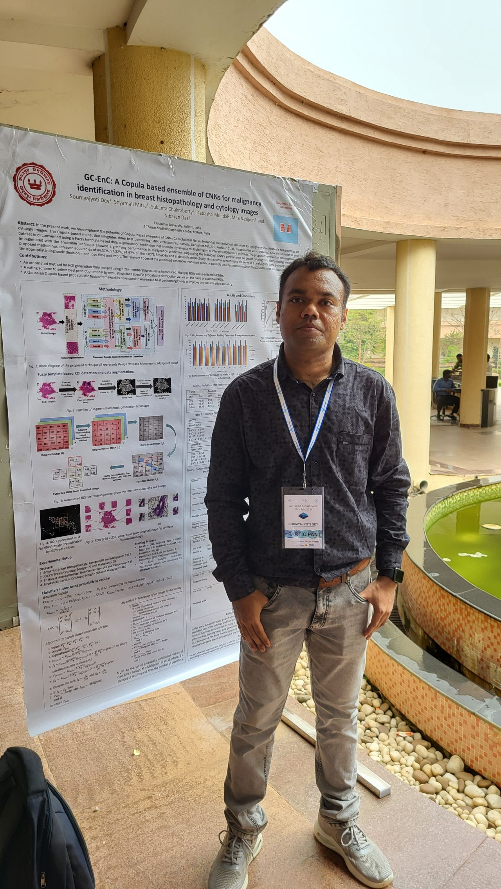

Soumyajyoti Dey
Hi! I am a Ph.D. researcher in the Department of Computer Science & Engineering at Jadavpur University, India, working under the guidance of Prof. Nibaran Das in the Deep Learning in Vision and Language Processing (DVLP) Research Group. I am also a research scholar under "Centre for Microprocessor Applications for Training, Education and Research". With a demonstrated history of working in Medical Image Processing and Deep Learning, my current research interest is to develop Computer-aided detection system for the diagnosis of cancer by analyzing digital Cytology and Histopathology images. .
Should you wish to learn more or connect with me, please feel free to email me or reach out via the links provided below.
Professional Experience
Visiting Research Scholar
- Intership under Anveshan Setu Fellowship Program, sponsored by ACM India.
- Worked under the supervision of Dr. Anirban Chakraborty, Visual Computing Lab, Department of Computational and Data Sciences (CDS), IISc
- Deploy Transformer based Deep Learning model for segmentation of Histopathology images.
Senior Research Fellow
- Research Fellow on a Project funded by Science and Engineering Research Board, Govt. of India.
- Implement Deep Learning based models for Cytology image analysis, like Classification, Segmentation and Data Augmentation.
- Developed Breast Cytology Image Database(JUCYT) by using Olympus Cx33 Trinocular microscope.
Junior Research Fellow
- Research Fellow on a Project funded by Science and Engineering Research Board, Govt. of India.
Education
Masters
Publications
List of Journals
S. Dey, S. Mitra, S. Chakraborty, D. Mondal, M. Nasipuri, and N. Das
Computers in Biology and Medicine. Elsevier BV, p. 106329, Nov. 2022. doi: 10.1016/j.compbiomed.2022.106329. (impact factor : 6.698), [GitHub]
Cytology Image Analysis Techniques Toward Automation: Systematically Revisited
S. Mitra, N. Das, S. Dey, S. Chakraborty, M. Nasipuri, and M. K. Naskar
ACM Computing Surveys, vol. 54, no. 3. Association for Computing Machinery (ACM), pp. 141, Apr. 30, 2022. doi: 10.1145/3447238. (impact factor 14.324)
List of Conferences
S. Ghosh, S. Dey, S. Nasipuri, and N. Das
9th International Conference on Computer Vision & Image Processing(CVIP-2024) [GitHub]
Could We Generate Cytology Images from Histopathology Images? An Empirical Study
S. Dey, S. Chakraborty, U. Guha Roy, and N. Das
International Conference on Advanced Computing and Applications(ICACA-2024) [GitHub]
Fuzzy Rank-based Late Fusion Technique for Cytology image Segmentation
S. Dey, S. Chakraborty, U. Guha Roy, and N. Das
International Conference on Data, Electronics and Computing(ICDEC-2023) [GitHub]
Malignancy Identification From Cytology Images Using Deep Optimal Features
S. Dey, S. Nasipuri, O. Ghosh, S. Chakraborty, D. Mondal, and N. Das
International Conference on Data, Electronics and Computing(ICDEC-2022), (pp. 279-287). Singapore: Springer Nature Singapore. [GitHub]
S. Dey, S. Das, S. Ghosh, S. Mitra, S. Chakrabarty and Das, and N. Das
National Conference on Computer Vision, Pattern Recognition, Image Processing, and Graphics-2019 (pp. 32-42). Springer, [GitHub][Poster]
S. Mitra, S. Dey, N. Das, S. Chakrabarty, M. Nasipuri, and M. K. Naskar
Social Transformation Digital Way. Springer Singapore, pp. 257269, 2018. doi: 10.1007/978-981- 13-1343-1 24. [GitHub]
List of Book Chapters
S. Mitra, S. Dey, N. Das, S. Chakrabarty, M. Nasipuri, and M. K. Naskar
Studies in Computational Intelligence. Springer Singapore, pp. 103122, Apr. 24, 2019. doi: 10.1007/978-981-13-7334-3 8. [GitHub]
Presentation
GC-EnC: A Copula based ensemble of CNNs for malignancy identification in breast histopathology and cytology images
S. Dey, and N. Das
18th Academic Research and Careers for Students (ARCS- 2024); NISER Bhubaneswar[Poster]
Identification of Ductal Carcinoma from Cytology Image using Deep Learning
S. Dey, and N. Das
Indian Symposium on Machine Learning (IndoML 2022); Indian Institute of Technology Gandhinagar[Poster]
Research Interests
Medical Image Processing • Digital Pathology (Cytology and Histopathology) • Generative Model • Deep Learning • Ensemble Model
Awards & Services
- Selected among 50 young Indian and International researchers for ACM Pingala interactions in computing, February, 2025 with full travel support. This event is hosted by Infosys Mysore Campus
- Recipient of Travel Grant & Registration Fees for presenting poster in "18th Academic Research and Careers for Students Symposium(ARCS-2024)" & participating in ACM India Annual Event, NISER, Bhubaneswar"[2024]
- Recipient of Anveshan Setu Fellowship, Funded by ACM India [2023]
- Recipient of Travel Grant for participating "Third Indian Symposium on Machine Learning, IIT Gandhinagar"[2022]
- Indian Graduate Aptitude Test in Engineering (GATE) [2020]
- Prize Winner in the competition "IEEE Xplore Challenge for Researchers in India", organized by Institute of Electrical and Electronics Engineers [2020]
- Project Fellowship, Funded by SERB, Govt. Of India [2019 - 2022]
- Volunteer at International Conference On Distributed Computing And Networking[2020]
- Reviewer of the journal: SADHANA (Impact factor: 1.6).
- Reviewed papers for the conferences: COMSYS-2020, 2021, 2022; ICDSA 2021; ICDEC-2022,2023,2024; CALCON 2022; CBMS 2023.
Teaching
Introduction to Programming Lab with C and C++ • Object-Oriented Programming Lab with Python and Java
Python Programming • Machine Learning
Gallery

 
